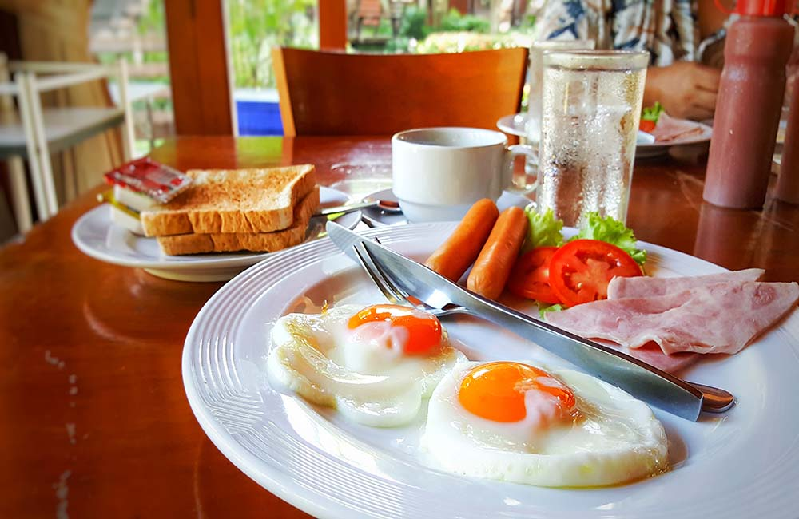

DAY 1
8.00 am – 10.00 am: Enjoy a sumptuous breakfast in North Goa
As you arrive in Goa early in the morning, you probably wouldn’t want to waste even a split second to delve in the amazing vibe of the state.
So just drop off your luggage at the hotel and head for an appetizing meal at one of North Goa’s most-loved breakfast places.
Where to eat?
| HOTEL | ADDRESS | MIN_BUDGET | CONTACT |
|---|---|---|---|
| Calangute | 5/181, Calangute Junction, Calangute, Goa | 350 | 9922202526 |
| Toro, Baga | 349/B, Tari Bhat, Nerul, Bardez, Baga, Goa | 500 | 8805808843 |
| Baba Au Rhum, Anjuna | 1054, Sim Vaddo, Baga, Goa | 250 | 9822866366 |
| Café, Anjuna | 1160/2B, Anjuna Mapusa Rd, Mazal Waddo, Anjuna, Goa 403509 | 100 | - |
10.00 am – 4.00 pm: Visit the sun-kissed beaches in the north

Post a sumptuous English breakfast or an authentic Goan morning feast, it’s time to hit one of the popular beaches in the north… after all, isn’t that why you planned a trip to Goa in the first place?
Depending on what you want to do, choose where you wish to go.
Where to go and why?
| PLACE | Activity |
|---|---|
| Baga Beach | For water sports like scuba diving, jet skiing and paragliding, dolphin cruises and banana, bumper and boat rides |
| Calangute Beach | For swimming, yoga, long walks, sunbathing, surfing, catamaran sailing and water skiing |
| Anjuna Beach | For water sports, Ayurvedic massages, hair braids and temporary tattoos In case it’s a Wednesday, don’t miss out on the popular Anjuna Flea Market to buy souvenirs, beachy clothes, home décor, artificial jewellery, spices and much more. |
Timings: 9.00 am till sunset (November to March)
After strolling down the long stretches of golden sand and indulging the water baby in you, you must have worked up an appetite by now.
You can try the seafood delicacies and other local fare served at one of the beach shacks or head to a good restaurant nearby.
Where to eat?
| HOTEL | ADDRESS | MIN_BUDGET | CONTACT |
|---|---|---|---|
| Pousada by the Beach | Holiday Street, Gauravaddo, Near Calangute, Goa | 3500 | 9922279265 |
| Souza Lobo, Calangute | Near Beach, Calangute, Goa | 2000 | 9529318812 |
| Britto’s | Calangute, Near Baga, Goa | 1050 | 7038687292 |
| Fat Fish | H/4/267/D, Ward 4, Agar Vaddo, Baga, Goa | 800 | 8806177550 |
| De Baga Deck | House 6/128C, Khobra Waddo, Calangute, Goa | 500 | 9763817305 |
| Purple Martini | Anjuna Beach, Anjuna, Goa | 650 | 8793242210 |
| Burger Factory | Main Road, Opposite Paradise Guest House, Anjuna, Goa | 500 | 9075640690 |
| Café Cotinga | House 1286, Kumarwada, Anjuna, Goa | 900 | 8669664477 |
Thereafter, continue your Goa journey to the iconic Chapora Fort.
By road: Approx. 20-30 minutes’ drive
4.30 pm – 6.00 pm: Recreate ‘Dil Chahta Hai’ pose at Chapora Fort

If you’re a Bollywood buff at heart, you wouldn’t want to miss out on exploring the historical ruins of Chapora Fort located next to Vagator Beach. You might find the trek up to the fort strenuous but the captivating views of the sunset sky above and the sea below will be worth it! Plus, you’ll get to click a picture at the place where the blockbuster, Dil Chahta Hai was shot.
- Last Entry: 5.30 pm (All days)
- By road: Approx. 10 minutes’ drive
After sunset, carefully climb down the fort and proceed to Vagator.
8.00 pm onwards: Eat, drink and make merry till late night hours

Should you wish to stay back in Vagator for dinner, it has some of the finest European restaurants in the area serving exotic Goan cuisine especially seafood delicacies.
Where to eat?
| HOTEL | ADDRESS | MIN_BUDGET | CONTACT |
|---|---|---|---|
| Olive Bar and Kitchen | Unit 1, Helipad, Near Vagator, Goa | 1500 | 7888037772 |
| Antares | Small Vagator Beach, Ozran, Vagator, Goa | 1000 | 7350011528 |
| Bean Me Up | Calangute, Near Baga, Goa | 500 | 7769095356 |
| Spice Traders | 495/2, Beach Road, Chapora, Vagator, Goa | 800 | 9168616095 |
| Tin | Main Beach Road, Vagator, Goa | 350 | 9623922796 |
DAY 2
9.00 am – 12.00 pm: Delve into history with a trip to Old Goa

Goa is not all about partying and chilling… it also has a totally different side to it that speaks volumes about the state’s rich architectural and cultural heritage. So start your second day with a quick breakfast at the hotel followed by a long drive to Old Goa (or Velha). Once the capital of Portuguese India, Velha has many colonial-era buildings for history buffs to explore.
Where to see?
| PLACE | Activity |
|---|---|
| Basilica of Bom Jesus | To explore Construction work on the church began in 1594 , but still no one was abled to put cross upon thus church. |
| Se Cathedral | Explore the architecture style of the Se Cathedral is Portuguese-Manueline. |
| Church of St. Cajetan | Explore The church is in the form of a Greek cross and has a large dome with Latin inscriptions from the Gospel of Matthew on its inside |
| Church of St. Francis of Assisi | Explore The three tier facade have octagonal towers on each side and in the central niche there is a statue of St. Michael. |
| Church of Our Lady of the Mount | Explore one of the oldest churches in the city and was built between 1510 and 1519 |
12.30 pm – 5.00 pm: Take a tour of the best of the best in Panaji

Drive through the cobblestone streets and bright, colourful Portuguese-era houses of Panaji to get a true feel of what the real Goa is. En route, catch a glimpse of some of the most popular landmarks in the area and if you have the time, don’t miss to capture them.
What to see?
| PLACE | Activity |
|---|---|
| Panaji | Church of Our Lady of the Immaculate Conception |
| Panjim | Fontainhas Latin Quarter |
Where to eat?
| HOTEL | ADDRESS | MIN_BUDGET | CONTACT |
|---|---|---|---|
| Bay 15 | 22/282, Odxel Beach, Dona Paula, Panaji, Goa | 500 | 8322456231 |
| The Fisherman’s Wharf | Cavelossim Road, Near Bryson Supermarket, Mobor, Cavelossim, Goa | 400 | 7030039844 |
| The Black Sheep Bistro | House 13/390, 1st Floor, Villa Braganza, Near Indoor Stadium Campal, Panaji, Goa | 500 | 9325023565 |
| Kokni Kanteen | House 10/40, 40/1, 40/2, Nachinolkar, A.B. Road, Panaji, Goa | 250 | 8322421972 |
| Ritz Classic | First Floor, Wagle Vision, 18th June Road, Panaji, Goa | 300 | 8322426417 |
Once you’re full, continue your sojourn in Panaji with a visit to its most frequented place – Miramar Beach. Clean and filled with soft sand, this beach is perfect for unwinding or taking an evening stroll or even binge drinking at one of the pubs or bars along the shore.
5.00 pm – 7.00 pm: Go for a boat cruise on the River Mandovi

When in Goa, you definitely shouldn’t miss out on the memorable gaming experience offered by the state’s offshore casinos. Who knows, you just might get lucky!
- Entry Fee: Starting @ 1500 per person
Where to go?
| PLACE | Activity |
|---|---|
| Deltin Royale | Deltin Royale Casino is one of the most renowned and luxurious casinos in Goa, India. Located on the Mandovi River, it offers a world-class gaming experience combined with opulent amenities, making it a popular destination for both domestic and international tourists. |
| Deltin Jaqk | Visit the Deltin Jaqk casino for a luxurious experience filled with food, drinks, entertainment, and a wide variety of games. Deltin Jaqk is a great place for both, beginners as well as casino junkies. This casino is known for its player-friendly environment and the international standards used while playing. Games like Teen Patti, Roulette, etc. |
| Deltin Caravela | Afloat on the Mandovi in splendid seclusion, far from the madding crowd, is Deltin Caravela. |
| Big Daddy Jetty | This Casino has unlimited drinks, buffet, dinner and snacks depend on the package |
| Casino Pride | Casino Pride Goa Entry Fee 2022 - Top | Best University in ... Casino Pride has different entrance fees depending on the day of the week. For example, the entry fee is INR 1500 from Monday to Thursday. But, you will get 500 INR one time voucher to use in the game. |
You can also enjoy live music and dance from 9 pm onwards along with a world-class gourmet buffet and free drinks that make the casino visit all the more worth it.
7.00 pm onwards: Party till you drop at North Goa’s pubs

You’ve spent time at Goa’s beach shacks that are open till late but your trip will be incomplete if you don’t witness the state’s happening nightlife at its various pubs. The delicious food, the cocktails and the peppy music are sure to bring out the party animal in you.
Where to go? and What to eat?
| PLACE | ADDRESS | ACTIVITY | CONTACT | AMOUNT |
|---|---|---|---|---|
| Cohiba | Sinquerim, Fort Aguada Road, Candolim, Goa | Dance and Chill | 7722031222 | 900 |
| SinQ | Near Taj Holiday Village, Candolim, Goa | enjoy the view | 8308000080 | 700 |
| LPK Waterfront | Near Bank Of India, Verem-Nerul Road, Bhatiwado, Nerul, Goa | Dance and Chill | 9326733295 | 1500 |
| Café Mambos | Near Bank Of India, Verem-Nerul Road, Bhatiwado, Nerul, Goa | Dance and Chill | 9326733295 | 1500 |
| Cape Town Café | Tito's Lane, Baga, Goa | Dance and Chill | 7981550539 | 1000 |